1996

Feb 27, 1996
Pokémon Red & Green released on the Gameboy in Japan.

Oct 20, 1996
Pokemon's first TCG set (Base Set) released in Japan.
Dec 12, 1996
First TCG product, "Starter Gift Box Set," released in stores.

1997
Mar 5, 1997
Jungle TCG expansion released in Japan.

Apr 1, 1997
Pokémon anime premiers in Japan.

June 5, 1997
Fossil TCG expansion released in Japan.
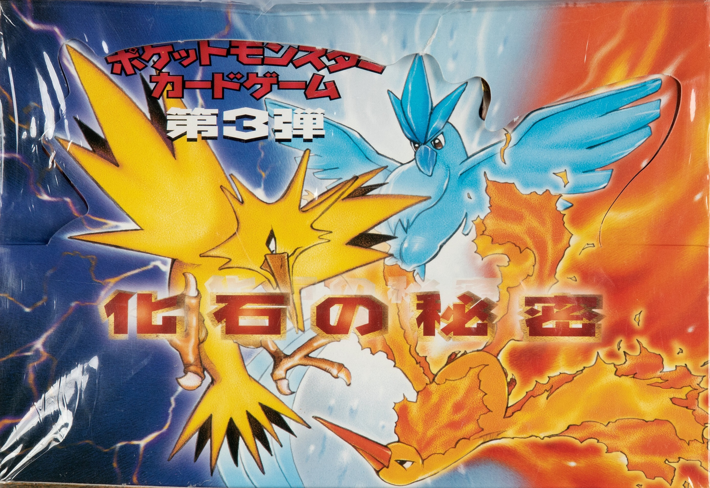
June 14 - 15, 1997
First ever official Pokémon Trading Card Game Tournament takes place in Japan during the 6th "Next Generation World Hobby Fair."
Translated Tournament Report
Nov 21, 1997
Team Rocket TCG expansion released in Japan.

Dec 15, 1997
First illustration contest winners announced, where 23 contestants won the elusive "Illustrator Card."
Detailed Contest Info
1998
Mar 23, 1998
First series of special cards distributed through Japanese vending machines released.
Apr 26, 1998
Charizard Mega Battle takes place in Japan. (First Official National Championship w/ more than 21,500 people in attendance! Remaining one of the largest TCG events in history.)
Tournament Info
"Leader's Stadium" pre-constructed decks (Brock & Misty) released. These decks built up to the release of the TCG expansion, Gym Heroes. (Other Leader's decks released later on.)

July 18, 1998
Pokémon the Movie "Mewtwo Strikes Back" premiers in Japan.


July 19 - Sept 3, 1998
2nd official Tournament Series "Blastoise Mega Battle" starts regional tournament circuit.
Tournament Info 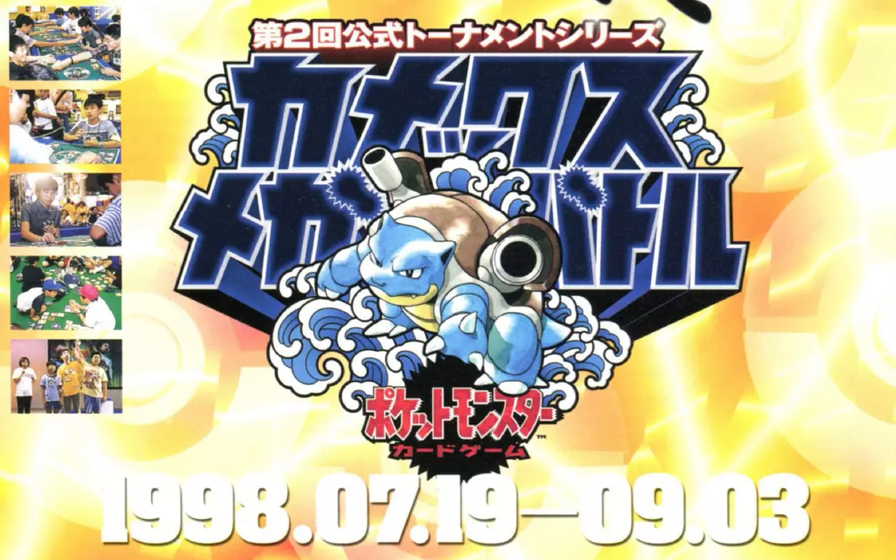
Sept 8, 1998
Pokémon anime premiers in America

Sept 12, 1998
Pokémon Yellow released on the Gameboy in Japan
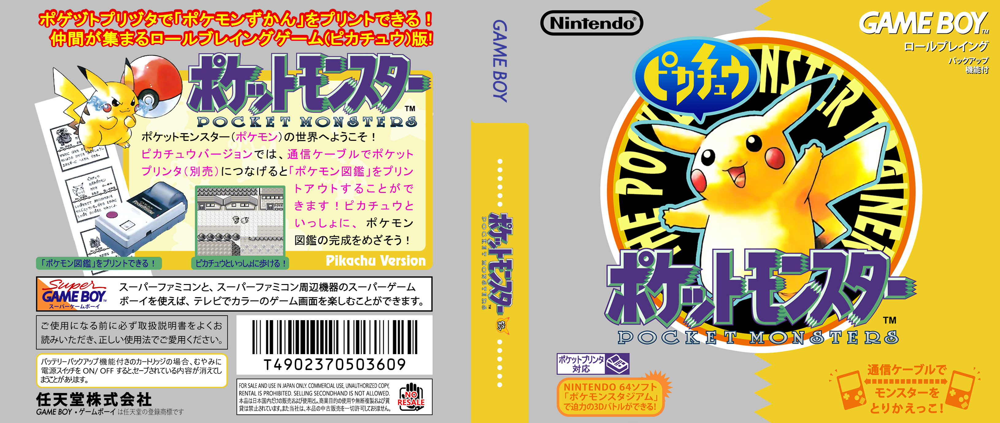
Sept 28, 1998
Pokémon Red & Blue released on the Gameboy in America.
(Other countries varied)

October, 1998
Japan's Gym Series kicks off, begining the start of TCG local organized play tournaments.

Oct 24, 1998
Gym Heroes TCG expansion released in Japan.
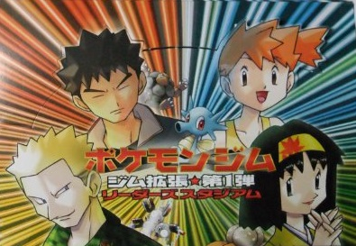
Dec 18, 1998
Pokémon Tading Card Game released on the Gameboy Color in Japan.
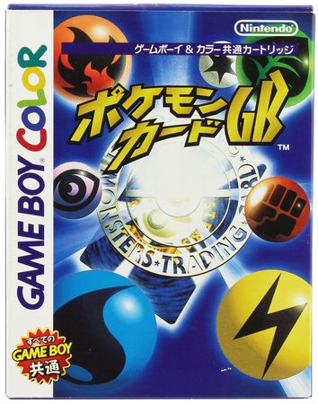1999
Jan 9, 1999
WOTC releases the first TCG set (Base Set) in America.

Late Jan, 1999
Brian Brokaw launches the Brokamon Center Website which quickly morphs into the Psylum PokeGym, the first incarnation of "PokeGym.net". Wizards took over the PokeGym forums after Psylum Network was shut down, and used it as a foundation for their message boards, renaming it to “The Wizards' PokeGym.”
cited: pokumon.com
March 1999
WOTC launches protoype Leagues to test out what could become of the TCG in America.
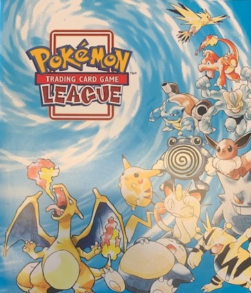WOTC & Nintendo begin "mall tours" along the East Coast to scout interest in the TCG. Attendance exceeded their expectations so much so, that many people were turned away due to capacity.
June 16, 1999
Jungle TCG expansion released in America.

June 25, 1999
Gym Challenge TCG expansion released in Japan.

July 17, 1999
Southern Islands special TCG expansion released in Japan.
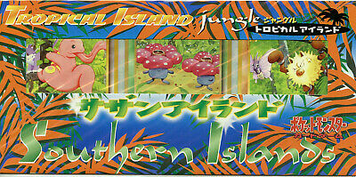
Aug 24 - 27, 1999
Tropical Mega Battle takes place in Hawaii, crowning both the Jr division Japanese National Champion & the first ever International Champion.
Tournament Info
Oct 8, 1999
Fossil TCG expansion released in America.
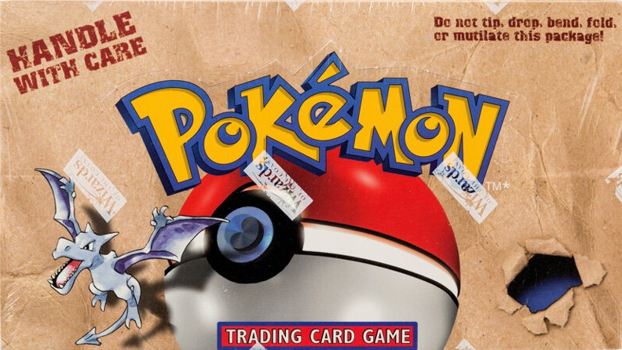
Oct 19, 1999
Pokémon Yellow: Special Pikachu Edition released on the Gameboy in America.
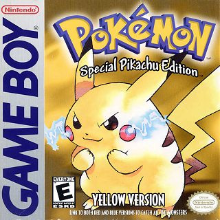
Nov 21, 1999
Pokémon Gold & Silver released on the Gameboy Color in Japan.

Pokémon the First Movie: Mewtwo Strikes Back premiers in America.

2000
Feb 4, 2000
Neo Genisis TCG expansion released in Japan.

Feb 24, 2000
Base Set 2 TCG expansion released in America. (First ever internationally exclusive set not released in Japan prior.)

Apr 10, 2000
Pokémon Trading Card Game released on the Gameboy Color in America.

Apr 24, 2000
Team Rocket TCG expansion released in America.
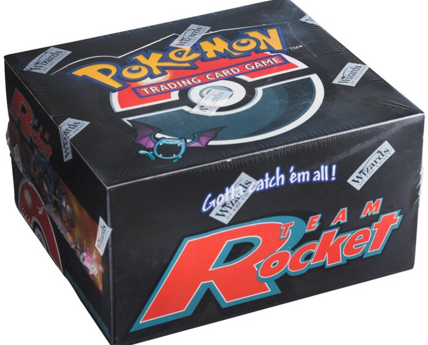
July 21, 2000
Pokémon the Movie 2000: The Power of One premiers in America, movie goers received the exclusive Ancient Mew promo card.


July 7, 2000
Neo Discovery TCG expansion released in Japan.
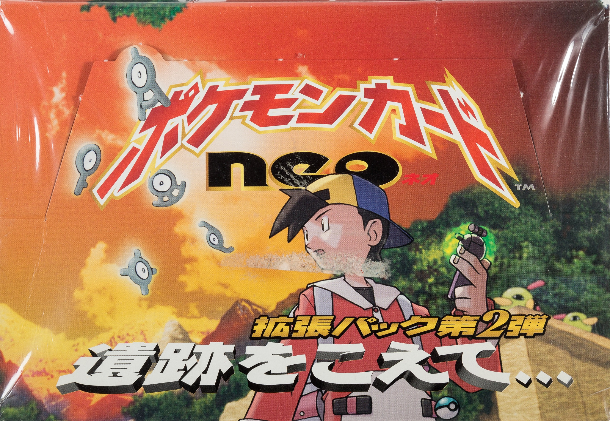
July 22, 2000
First Super Trainer Showdown held on a decommissioned cruise ship in California.
Tournament Info
Aug 14, 2000
Gym Heroes TCG expansion released in America.

Oct 15, 2000
Pokémon Gold & Silver released on the Gameboy Color in America.
(Other countries varied).
Oct 16, 2000
Gym Challenge TCG expansion released in America.


Nov 23, 2000
Neo Revelation TCG expansion released in Japan.

Dec 16, 2000
Neo Genisis TCG expansion released in America.